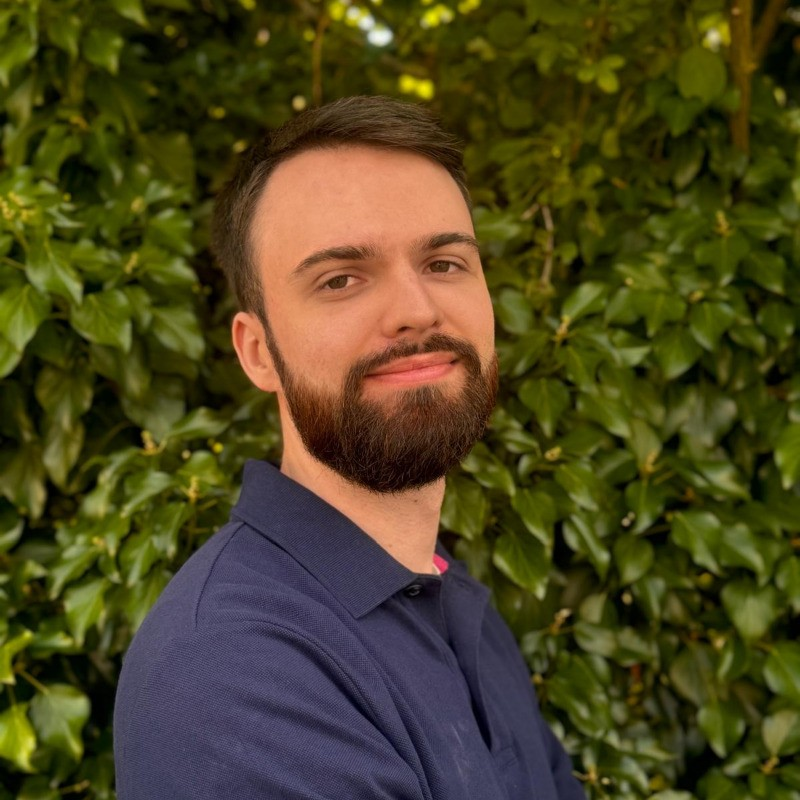
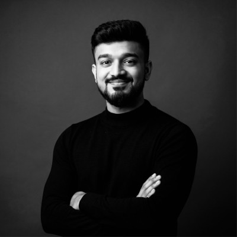

Current Student (Funded by MMM)

Niklas Bockelmann
Research Assistant (mini-job)
August 2026 - December 2026
Niklas obtained his Bachelor's degree in Computer Science from the University of Bremen and is currently pursuing a Master's degree in Computer Science with a specialization in Artificial Intelligence at the University of Bremen. His research project focuses on the analysis of EEG brain data from programmers and the investigation of cognitive patterns during programming tasks.
Muhammad Uzair Baqir
Research Assistant (mini-job)
August 2026 - December 2026
Uzair is currently pursuing a Master’s degree in Artificial Intelligence (Intelligent Systems) at the University of Bremen. His research project focuses on EEG signal analysis, biomedical signal processing, and machine learning techniques.
Former Students

Sourin Kumar Pal
Hiwi (Funded by CAUSE)
Co-supervised with Iman Morovatian
Sourin is currently pursuing a Master's degree in Artificial Intelligence (Intelligent Systems) at the University of Bremen. His research project focuses on AI4SE, program slicing, code summarization and related topics.